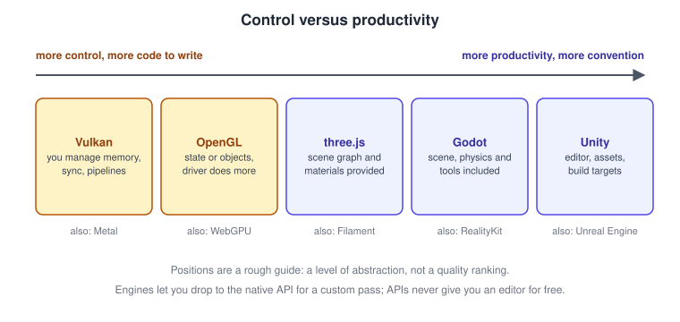
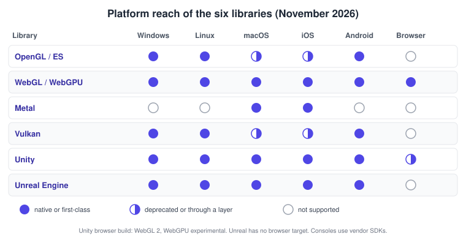
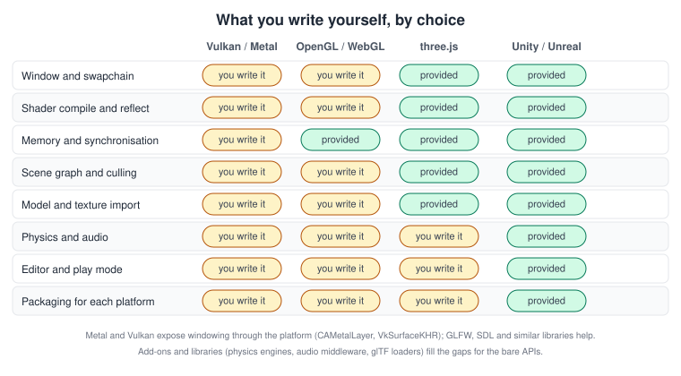
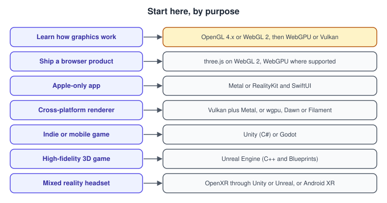

Choosing an API or Engine
|
This content was generated with the assistance of AI and should be verified against the official documentation before being relied on in production. |
This page was checked in November 2026. It helps you choose which of the six libraries documented in this section to start with, and when to combine them. The versions it assumes are OpenGL 4.6 and OpenGL ES 3.2, WebGL 2.0 with three.js r187 (and WebGPU, a W3C Candidate Recommendation Draft), Metal 4 with Xcode 27, Vulkan 1.4, Unity 6.3 LTS (6000.3) and Unreal Engine 5.8. Platform notes are for Windows, macOS, Linux, iOS, Android, browsers and XR headsets. Treat anything that depends on a vendor’s roadmap, a licence or a price as a snapshot and re-check it against the vendor pages in the references before you commit a project to it.
The six libraries are not the same kind of product, so the first decision is the kind, not the name. Read Graphics APIs vs Game Engines for the definitions and Cross-Platform Translation Layers for how code moves between them.
Two decisions, in this order
-
Do you want to write a renderer or ship a product? A graphics API (OpenGL, WebGL, WebGPU, Metal, Vulkan) gives you the GPU and nothing else. A framework (three.js) adds a scene graph, materials and loaders. An engine (Unity, Unreal) adds an editor, an asset pipeline, physics, audio, scripting and build targets. Each step trades control for productivity.
-
Where must it run? Platform reach narrows the list faster than any other criterion.
The next figure shows the first decision as a spectrum, and the one after it shows the second.


Reading the grid:
-
OpenGL and OpenGL ES run natively on Windows, Linux and Android. They are deprecated on Apple platforms (macOS stops at OpenGL 4.1; ES on iOS is deprecated). In browsers the equivalent is WebGL, a separate API.
-
WebGL and WebGPU reach every platform with a modern browser. WebGPU is the successor, and ships in Chrome and Edge, Firefox (on Windows) and Safari 26; WebGL 2 is the safe baseline for the widest audience.
-
Metal is Apple only, and it is the only first-class graphics API on Apple platforms.
-
Vulkan runs natively on Windows, Linux and Android. On Apple platforms it runs through a translation layer (MoltenVK or KosmicKrisp), and it does not run in the browser.
-
Unity targets all the platforms in the grid and also consoles; the web target uses WebGL 2 by default. WebGPU is experimental in Unity 6.3 LTS and left experimental status in Unity 6.6. Unreal Engine targets desktop, mobile and consoles but has no browser target (Pixel Streaming is the usual route to a browser). Console support requires the console maker’s SDK and licence for either engine.
Criteria
| Criterion | What to ask |
|---|---|
Platforms |
Which operating systems and devices are required on day one, and which later? Is a browser version needed? |
Team and skills |
C++ (Vulkan, OpenGL, Unreal), C# (Unity), Swift (Metal, RealityKit), JavaScript or TypeScript (three.js, WebGL, WebGPU). A team that already knows an engine’s editor ships faster than one learning an API. |
Control versus productivity |
Do you need to own memory, synchronisation and every pass (Vulkan, Metal), or is a scene, a material system and an editor worth more? |
Time to first result |
An hour for three.js or an engine template; days for a Vulkan triangle that is correct and validated. |
Web reach |
No install and shareable by link favours three.js, WebGL 2 and WebGPU. |
XR |
OpenXR through Unity or Unreal for headsets; ARCore and ARKit for phones; WebXR for the browser. See Augmented and Mixed Reality Basics. |
Visual ceiling |
Unreal and a custom Vulkan or Metal renderer have the highest ceiling; Unity and three.js are plenty for most products. |
Tooling and debugging |
Which capture and profiling tools exist for the target (see Performance and Profiling)? |
Licence and cost |
Royalty-free standard, open source licence, per-seat plan, royalty above a revenue threshold? |
Longevity |
Is the API deprecated on a target platform, or is a major version in transition? |
What you write yourself
The same renderer needs very different amounts of code depending on the choice. Everything not marked "provided" below is code, tests and maintenance that you own.

A "hello world" shows the difference more clearly than a table. The first listing shows a browser scene with three.js: a lit, rotating book placeholder in about thirty lines, with automatic fallback from WebGPU to WebGL 2.
import * as THREE from 'three/webgpu'; // WebGPURenderer falls back to its WebGL 2 backend
const renderer = new THREE.WebGPURenderer({ antialias: true });
renderer.setSize(window.innerWidth, window.innerHeight);
document.body.appendChild(renderer.domElement);
await renderer.init(); // selects WebGPU when available, otherwise WebGL 2
const scene = new THREE.Scene();
const camera = new THREE.PerspectiveCamera(60, window.innerWidth / window.innerHeight, 0.1, 100);
camera.position.set(0, 1.2, 3);
scene.add(new THREE.HemisphereLight(0xffffff, 0x444444, 1.0));
const sun = new THREE.DirectionalLight(0xffffff, 2.0);
sun.position.set(3, 5, 2);
scene.add(sun);
const book = new THREE.Mesh(
new THREE.BoxGeometry(0.3, 0.45, 0.06),
new THREE.MeshStandardMaterial({ color: 0xb45309, roughness: 0.6, metalness: 0.0 }),
);
scene.add(book);
renderer.setAnimationLoop((time) => {
book.rotation.y = time / 1000;
renderer.render(scene, camera);
});Source: three.js manual
The Unity equivalent is a component that spawns the shelf from a prefab; the scene, lights, physics and build are already done by the editor.
using UnityEngine;
public class ShelfSpawner : MonoBehaviour
{
[SerializeField] private GameObject shelfPrefab; // bookshelf imported from bookshelf.glb and saved as a prefab
void Start()
{
Instantiate(shelfPrefab, new Vector3(0f, 0f, 3f), Quaternion.identity);
}
}A Vulkan program for the same result needs, before the first draw: an instance and validation layers, a surface and a physical-device choice, a logical device and queues, a swapchain and image views, a render pass or dynamic rendering set-up, shader modules and a graphics pipeline, vertex and index buffers with memory you allocate, descriptor sets for the texture and uniforms, command pools and buffers, and semaphores and fences for each frame in flight. That is several hundred lines and, for a first renderer, is the right trade only when you need what it buys: precise control over memory, multi-threaded command recording and the lowest CPU overhead. The Vulkan tutorial and Vulkan Guide walk through it.
Source: Vulkan Tutorial
Capability detection in a web product
If you pick the web, you often pick two backends and choose between them at runtime. This function reports which backend is available so that you can load the matching renderer.
// Prefer WebGPU, fall back to WebGL 2, and report "none" for old browsers.
async function pickBackend(canvasForProbe) {
if ('gpu' in navigator) {
try {
const adapter = await navigator.gpu.requestAdapter();
if (adapter) return 'webgpu';
} catch (e) { /* adapter request can fail on blocklisted drivers */ }
}
return canvasForProbe.getContext('webgl2') ? 'webgl2' : 'none';
}
pickBackend(document.createElement('canvas')).then((b) => console.log('using', b));Source: MDN: WebGPU API
Profiles of the six
| Status in 2026 | Language and shaders | Governance and licence | Debugging | |
|---|---|---|---|---|
OpenGL 4.6, ES 3.2 |
Frozen core, live extensions; deprecated on Apple platforms; Android moving ES onto ANGLE |
C or C++; GLSL |
Khronos specification; implemented by drivers |
RenderDoc, vendor tools |
WebGL 2, three.js r187, WebGPU |
WebGL 2 is the universal baseline; WebGPU ships in several browsers and is a W3C Candidate Recommendation Draft |
JavaScript or TypeScript; GLSL ES (WebGL), WGSL (WebGPU) |
Khronos (WebGL), W3C (WebGPU); three.js is MIT-licensed |
Browser DevTools, extensions |
Metal 4 |
Required for new Apple GPU work; Metal 4 needs A14 or M1 or later |
Swift, Objective-C or C++; Metal Shading Language 4.1 |
Apple; free with Xcode |
Xcode Metal debugger |
Vulkan 1.4 |
Current core, with a 2026 roadmap profile; runs on Apple through layers |
C or C++ (bindings exist); GLSL, HLSL or Slang compiled to SPIR-V |
Khronos; royalty-free specification |
RenderDoc, validation layers, vendor tools |
Unity 6.3 LTS |
LTS line; Built-in Render Pipeline deprecated, HDRP in maintenance, URP with Render Graph the default path |
C#; HLSL, Shader Graph |
Unity Technologies; proprietary, per-seat plans, Runtime Fee cancelled |
Frame Debugger, Profiler |
Unreal Engine 5.8 |
Current release; UE6 announced; Enhanced Input is the default input system |
C++ and Blueprints; HLSL, material graph |
Epic Games; source available, 5% royalty above US$1M gross revenue per product |
Unreal Insights, GPU Visualizer |
Engine licences have changed more than once. The Unity Runtime Fee announced in 2023 was cancelled, and Epic’s terms have different rules for games and for other uses and exempt sales through some stores; the pricing and licence pages in the references are authoritative, and your lawyer is the final word. Khronos APIs are royalty-free specifications, but you still depend on a vendor driver, and Apple’s Metal needs Apple’s developer programme to distribute apps.
The decision flowchart
Use the tree to find a starting point, not to fix the answer. Teams combine choices: a Vulkan renderer with a Metal backend, a Unity game with a custom native plugin, a three.js front end with a WebGPU compute pass.
Recommendations by purpose

-
Learning graphics. Start where the concepts are easiest to see: OpenGL 4.x or WebGL 2 for the state-machine model, then WebGPU or Vulkan to learn explicit resources (see Explicit vs Implicit APIs). The maths and pipeline pages of this section apply to all of them.
-
A browser product. three.js on WebGL 2, with WebGPU as an upgrade path.
-
An Apple-only app. Metal for custom rendering, RealityKit and SwiftUI for everything else.
-
A cross-platform renderer. Vulkan plus a Metal backend, or WebGPU through wgpu or Dawn, or Filament for glTF rendering; keep a thin RHI of your own.
-
An indie or mobile game. Unity (C#) or Godot; both ship to many platforms with a small team.
-
A high-fidelity 3D game. Unreal Engine, where Nanite, Lumen and the toolset save years of renderer work.
-
XR. An engine with OpenXR support, or Android XR and ARKit and RealityKit for platform-native apps.
Common mistakes
-
Picking an API because it is "closest to the hardware" when the product needs an editor and a team of artists.
-
Writing an engine by accident: after the third feature (scene graph, asset loading, input, audio) a project that began as "just a renderer" is a bad, undocumented engine.
-
Choosing a deprecated target for new work, such as OpenGL as the only API on Apple platforms.
-
Assuming an engine hides all platform differences. Shaders, memory budgets and input still need per-platform testing.
-
Deciding on popularity charts alone. Survey shares vary by audience; use them as context, and read the primary report (GDC State of the Industry, JetBrains State of GameDev, Steam Hardware Survey) rather than a quoted percentage.
-
Ignoring licence terms until release. Check royalty thresholds and seat plans while the architecture can still change.
Performance notes
The choice sets the ceiling, not the result. A well-used engine outruns a careless Vulkan renderer, and an engine’s overhead (scene traversal, scripting, garbage collection) is usually small next to GPU work. Explicit APIs reduce CPU cost per draw call and allow multi-threaded recording, which matters for scenes with tens of thousands of objects; implicit APIs and engines hide that cost behind batching. Measure first (see the profiling page) before switching technology for performance.
Recent changes
-
OpenGL: still at 4.6, with new vendor and EXT extensions (mesh shaders arrived as an extension in 2025); deprecated on Apple platforms since 2018; Android is moving OpenGL ES onto ANGLE.
-
WebGPU: advanced to a Candidate Recommendation Draft and now ships in the major browser families.
-
Vulkan 1.4 and the 2026 roadmap profile raised the baseline; new extensions such as descriptor heaps simplify resource binding; KosmicKrisp joins MoltenVK on Apple.
-
Metal 4 (Xcode 27) raises the baseline to A14 and M1 or later and deprecates managed storage and Intel GPU families in the 27 OS releases.
-
Unity 6: Render Graph and URP are the focus; the Built-in Render Pipeline is deprecated and HDRP is in maintenance.
-
Unreal Engine 5.8: current; Epic announced Unreal Engine 6.
What the books say, and where they are outdated
The general books in this section teach one abstraction each, and their fate is a useful case study for the criteria above. Daniel Selman’s Java 3D Programming and Sun’s The Java 3D API Specification describe a retained-mode scene-graph API with no editor and no asset pipeline: it solved a real productivity problem in 2002 but could not follow the move to shaders, mobile and the web, and the community-maintained JogAmp release (1.7.2 on JOGL 2.6) is a niche choice today. Raghav Sood’s Pro Android Augmented Reality chooses OpenGL ES 1.x and a marker library hosted on a closed service. The lessons carry over: check that the stack you pick has an owner, an update path and a debugger. Where the books recommend a specific API, the profiles table above replaces them; the per-library pages list the outdated statements.
See it in
OpenGL: OpenGL in 2026; WebGL: WebGL Versions and Browser Support; Metal: Metal; Vulkan: Vulkan; Unity: Unity; Unreal Engine: Unreal Engine.
References
-
GDC State of the Industry and JetBrains: State of GameDev 2025
-
Daniel Selman, Java 3D Programming: Manning
-
Raghav Sood, Pro Android Augmented Reality: Apress on SpringerLink